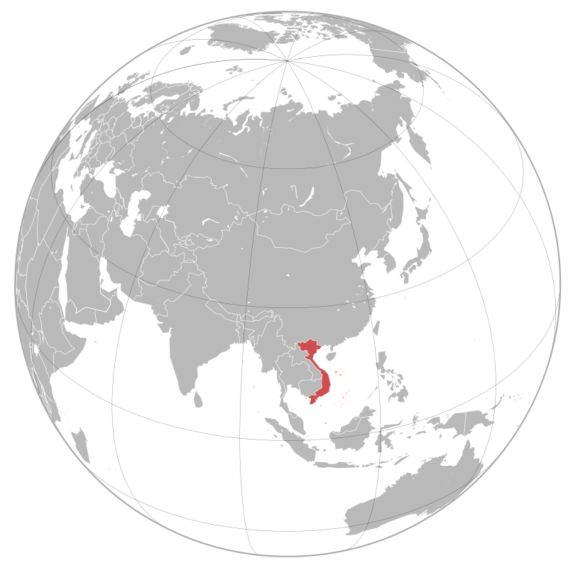
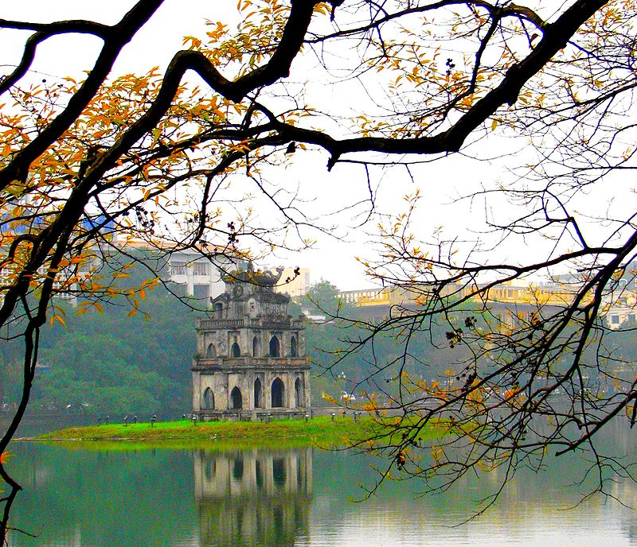
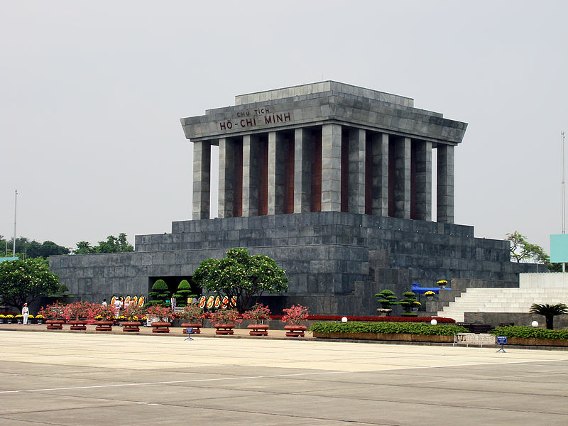
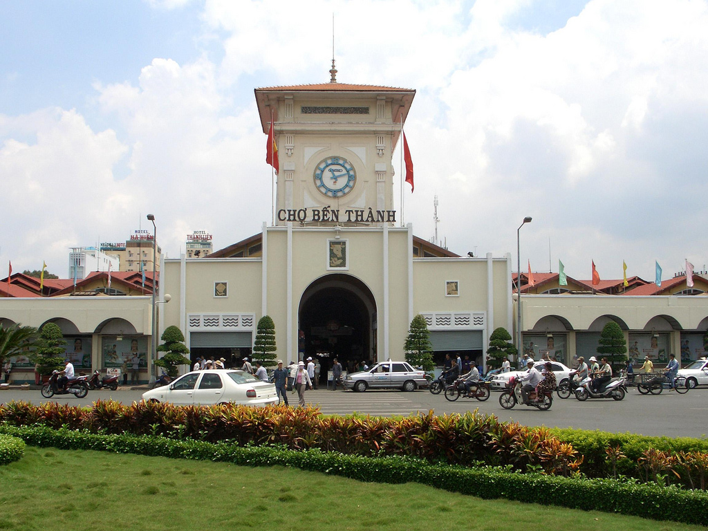

Việt Nam, tên chính thức: Cộng hòa Xã hội chủ Nghĩa Việt Nam, là một quốc gia nằm ở phía đông bán đảo Đông Dương, thuộc khu vực Đông Nam Á. Việt Nam phía bắc giáp Trung Quốc, phía tây giáp Lào và Campuchia, phía tây nam giáp vịnh Thái Lan, phía đông và phía nam giáp biển Đông và có hơn 4.000 hòn đảo, bãi đá ngầm lớn nhỏ, gần và xa bờ, có vùng nội thủy, lãnh hải, vùng đặc quyền kinh tế và thềm lục địa được Chính phủ Việt Nam xác định gần gấp ba lần diện tích đất liền (khoảng trên 1 triệu km²). Trên biển Đông có quần đảo Trường Sa và Hoàng Sa được Việt Nam tuyên bố chủ quyền nhưng vẫn đang bị tranh chấp với các quốc gia khác như Đài Loan, Trung Quốc, Malaysia và Philippines.
Sau khi Việt Nam Dân chủ Cộng hòa ở miền Bắc và Mặt trận dân tộc giải phóng miền nam Việt Nam giành chiến thắng trước Việt Nam Cộng hòa ở miền Nam ngày 30 tháng 4 năm 1975, hai miền Bắc-Nam được thống nhất. Ngày 2 tháng 7 năm 1976 nước Việt Nam được đặt Quốc hiệu là Cộng hòa Xã hội chủ nghĩa Việt Nam.
Vào năm 1986, Việt Nam tiến hành một số cải cách về kinh tế (gọi là đổi mới), mở cửa cho nền kinh tế Việt Nam hòa nhập với quốc tế. Việt Nam đã thiết lập mối quan hệ ngoại giao với 178 quốc gia, quan hệ kinh tế - thương mại - đầu tư với trên 224 quốc gia và vùng lãnh thổ, là thành viên Liên Hợp Quốc, ASEAN, ASEM, APEC, WTO, Tổ chức quốc tế Pháp ngữ, Phong trào không liên kết và nhiều tổ chức quốc tế, khu vực khác...
Kể từ năm 2000 Việt Nam là một trong những nước có mức tăng trưởng kinh tế nhanh nhất thế giới, và theo Citigroup, mức tăng trưởng cao này sẽ còn tiếp tục phát triển. Theo BBC, năm 2004, Việt Nam đứng thứ 11 trong các nền kinh tế tăng trưởng nhanh nhất trên thế giới. Tuy nhiên, tốc độ tăng trưởng chậm lại trong một số năm sau, năm 2013 tăng trưởng 5,42%, xếp thứ 6 trong 11 nước khu vực Đông Nam Á. Việc đổi mới kinh tế thành công đã dẫn đường cho Việt Nam trở thành thành viên của Tổ chức Thương mại Thế giới vào năm 2007.
Tuy nhiên, Việt Nam vẫn còn gặp phải nhiều vấn đề như tỷ lệ lạm phát cao, bất bình đẳng về thu nhập cao, dịch vụ chăm sóc sức khỏe kém và tình trạng bất bình đẳng giới tính còn nhiều.
Việt Nam nằm trong bán đảo Đông Dương, thuộc vùng đông nam châu Á. Lãnh thổ Việt Nam chạy dọc bờ biển phía đông của bán đảo này. Việt Nam có biên giới đất liền với Trung Quốc (1.281 km), Lào (2.130 km) và Campuchia (1.228 km) và bờ biển dài 3.444 km tiếp giáp với vịnh Bắc Bộ, biển Đông và vịnh Thái Lan.
Việt Nam có diện tích 331.698 km², bao gồm khoảng 327.480 km² đất liền và hơn 4.500 km² biển nội thủy, với hơn 2.800 hòn đảo, bãi đá ngầm lớn nhỏ, gần và xa bờ, bao gồm cả Trường Sa và Hoàng Sa mà Việt Nam tuyên bố chủ quyền, có vùng nội thủy, lãnh hải, vùng đặc quyền kinh tế và thềm lục địa được Chính phủ Việt Nam xác định gần gấp ba lần diện tích đất liền khoảng trên 1 triệu km².
Địa hình Việt Nam rất đa dạng theo các vùng tự nhiên như vùng tây bắc, đông bắc, Tây Nguyên có những đồi và những núi đầy rừng, trong khi đất phẳng che phủ khoảng ít hơn 20%. Núi rừng chiếm độ 40%, đồi 40%, và độ che phủ khoảng 75%. Các vùng đồng bằng như đồng bằng sông Hồng, đồng bằng sông Cửu Long và các vùng duyên hải ven biển như Bắc Trung Bộ và Nam Trung Bộ. Nhìn tổng thể Việt Nam gồm ba miền với miền Bắc có cao nguyên và vùng châu thổ sông Hồng, miền Trung là phần đất thấp ven biển, những cao nguyên theo dãy Trường Sơn, và miền Nam là vùng châu thổ Cửu Long. Điểm cao nhất Việt Nam là 3.143 mét, tại đỉnh Phan Xi Păng, thuộc dãy núi Hoàng Liên Sơn. Diện tích đất canh tác chiếm 17% tổng diện tích đất Việt Nam.
Việt Nam có khí hậu nhiệt đới xavan ở miền Nam với hai mùa (mùa mưa, từ giữa tháng 5 đến giữa tháng 9, và mùa khô, từ giữa tháng 10 đến giữa tháng 4) và khí hậu cận nhiệt đới ẩm ở miền Bắc với bốn mùa rõ rệt (mùa xuân, mùa hè, mùa thu và mùa đông), còn miền trung có đặc điểm của khí hậu nhiệt đới gió mùa. Do nằm dọc theo bờ biển, khí hậu Việt Nam được điều hòa một phần bởi các dòng biển và mang nhiều yếu tố khí hậu biển. Độ ẩm tương đối trung bình là 84% suốt năm. Hằng năm, lượng mưa từ 1.200 đến 3.000 mm,số giờ nắng khoảng 1.500 đến 3.000 giờ/năm và nhiệt độ từ 5 °C đến 37 °C. Hàng năm, Việt Nam luôn phải phòng chống bão và lụt lội với 5 đến 10 cơn bão/năm.
Về tài nguyên đất, Việt Nam có rừng tự nhiên và nhiều mỏ khoáng sản trên đất liền với phốt phát, than đá, măng gan, bô xít, chrômát,... Về tài nguyên biển có dầu mỏ, khí tự nhiên, quặng khoáng sản ngoài khơi. Với hệ thống sông dốc đổ từ các cao nguyên phía tây, Việt Nam có nhiều tiềm năng về phát triển thủy điện.
 Hà Nội là thủ đô của nước Việt Nam từ năm 1976 đến nay, và là thủ đô của nước Việt Nam Dân chủ Cộng hòa từ năm 1946, là thành phố lớn nhất Việt Nam về diện tích với 3328,9 km2, đồng thời cũng là địa phương đứng thứ nhì về dân số với 6.699.600 người (2011). Hiện nay, thủ đô Hà Nội và thành phố Hồ Chí Minh là đô thị loại đặc biệt của Việt Nam. Hà Nội nằm giữa đồng bằng sông Hồng trù phú, nơi đây đã sớm trở thành một trung tâm chính trị và tôn giáo ngay từ những buổi đầu của lịch sử Việt Nam. Năm 1010, Lý Công Uẩn, vị vua đầu tiên của nhà Lý, quyết định xây dựng kinh đô mới ở vùng đất này với cái tên Thăng Long. Trong suốt thời kỳ của các triều đại Lý, Trần, Lê, Mạc, kinh thành Thăng Long là nơi buôn bán, trung tâm văn hóa, giáo dục của cả miền Bắc. Khi Tây Sơn rồi nhà Nguyễn lên nắm quyền trị vì, kinh đô được chuyển về Huế và Thăng Long bắt đầu mang tên Hà Nội từ năm 1831, dưới thời vua Minh Mạng. Năm 1902, Hà Nội trở thành thủ đô của Liên bang Đông Dương và được người Pháp xây dựng, quy hoạch lại. Trải qua hai cuộc chiến tranh, Hà Nội là thủ đô của miền Bắc rồi nước Việt Nam thống nhất và giữ vai trò này cho tới ngày nay.
Sau đợt mở rộng địa giới hành chính vào tháng 8 năm 2008, Hà Nội hiện nay gồm 12 quận, 1 thị xã và 17 huyện ngoại thành. Hiện nay, Hà Nội và Thành phố Hồ Chí Minh là hai trung tâm kinh tế - xã hội đặc biệt quan trọng của Việt Nam. Năm 2009, sau khi mở rộng, GDP của thành phố tăng khoảng 6,67%, tổng thu ngân sách khoảng 70.054 tỷ đồng. Hà Nội cũng là một trung tâm văn hóa, giáo dục với các nhà hát, bảo tàng, các làng nghề truyền thống, những cơ quan truyền thông cấp quốc gia và các trường đại học lớn.
Cách đây khoảng 6 thế kỷ, dựa theo bản đồ thời Hồng Đức thì phần lớn xung quanh kinh thành khi ấy là nước. Hồ Hoàn Kiếm là một phân lưu sông Hồng chảy qua vị trí của các phố ngày nay như Hàng Đào, Hai Bà Trưng, Lý Thường Kiệt, Hàng Chuối. Tiếp đó đổ ra nhánh chính của sông Hồng. Nơi rộng nhất phân lưu này hình thành nên hồ Hoàn Kiếm hiện nay.
Thời Lê Trung hưng (thế kỷ 16), khi chúa Trịnh cho chỉnh trang Hoàng thành Thăng Long để vua Lê ở đã đồng thời xây dựng phủ chúa riêng nằm ngay bên ngoài Hoàng thành và trở thành một cơ quan trung ương thời bấy giờ với những công trình kiến trúc xa hoa như lầu Ngũ Long (dùng để duyệt quân) nằm ở bờ Đông hồ Hoàn Kiếm, đình Tả Vọng trên đảo Ngọc Sơn. Năm 1728 Trịnh Giang cho đào hầm ở vị trí phía Nam hồ để xây dựng cung điện ngầm gọi là Thưởng Trì cung.
Chúa Trịnh cho ngăn hồ lớn thành hồ Tả Vọng và Hữu Vọng. Hồ Hữu Vọng được dùng làm nơi duyệt quân thuỷ chiến của triều đình. Đến đời Tự Đức (1847-1883), hồ Hữu Vọng được gọi là hồ Thủy Quân, còn hồ Tả Vọng chính là hồ Hoàn Kiếm. Từ năm 1884, nhà nước bảo hộ Pháp cho lấp hồ Thuỷ Quân để xây dựng, mở mang Hà Nội.
Lăng Chủ tịch Hồ Chí Minh, hay còn gọi là Lăng Hồ Chủ tịch, Lăng Bác, là nơi đặt thi hài của chủ tịch Hồ Chí Minh. Lăng Chủ tịch Hồ Chí Minh được chính thức khởi công ngày 2 tháng 9 năm 1973, tại vị trí của lễ đài cũ giữa Quảng trường Ba Đình, nơi ông đã từng chủ trì các cuộc mít tinh lớn.
Lăng được khánh thành vào ngày 29 tháng 8 năm 1975. Lăng gồm 3 lớp với chiều cao 21,6 mét, lớp dưới tạo dáng bậc thềm tam cấp, lớp giữa là kết cấu trung tâm của lăng gồm phòng thi hài và những hành lang, những cầu thang lên xuống. Quanh bốn mặt là những hàng cột vuông bằng đá hoa cương, lớp trên cùng là mái lăng hình tam cấp. Ở mặt chính có dòng chữ: "Chủ tịch Hồ Chí Minh" bằng đá hồng màu mận chín. Trong di chúc, Hồ Chí Minh muốn được hỏa táng và đặt tro tại ba miền đất nước. Tuy nhiên, Bộ Chính trị Ban Chấp hành Trung ương Đảng Cộng sản Việt Nam khóa III, với lý do "theo nguyện vọng và tình cảm của nhân dân", quyết định giữ gìn lâu dài thi hài Hồ Chí Minh để sau này người dân cả nước, nhất là người dân miền Nam, khách quốc tế có thể tới viếng.
Thành phố Hồ Chí Minh (hiện nay vẫn được gọi phổ biến với tên cũ là Sài Gòn) là thành phố đông dân nhất, đồng thời cũng là trung tâm kinh tế, văn hóa, giáo dục quan trọng của Việt Nam. Trên cơ sở diện tích tự nhiên, thì thành phố Hồ Chí Minh là đô thị lớn thứ nhì Việt Nam (sau khi thủ đô Hà Nội được mở rộng). Nếu xét về quy mô dân số, thì thành phố Hồ Chí Minh là đô thị lớn nhất Việt Nam. Hiện nay, thành phố Hồ Chí Minh cùng với thủ đô Hà Nội là đô thị loại đặc biệt của Việt Nam.
Vùng đất này ban đầu được gọi là Prey Nokor, thành phố sau đó hình thành nhờ công cuộc khai phá miền Nam của nhà Nguyễn. Năm 1698, Nguyễn Hữu Cảnh cho lập phủ Gia Định, đánh dấu sự ra đời thành phố. Khi người Pháp vào Đông Dương, để phục vụ công cuộc khai thác thuộc địa, thành phố Sài Gòn được thành lập và nhanh chóng phát triển, trở thành một trong hai đô thị quan trọng nhất Việt Nam, được mệnh danh Hòn ngọc Viễn Đông hay Paris Phương Đông. Sài Gòn là thủ đô của Liên bang Đông Dương giai đoạn 1887-1901. Năm 1949, Sài Gòn trở thành thủ đô của Quốc gia Việt Nam và sau này là Việt Nam Cộng hòa. Kể từ đó, thành phố hoa lệ này trở thành một trong những đô thị quan trọng của vùng Đông Nam Á. Sau khi Việt Nam Cộng hòa sụp đổ trong sự kiện 30 tháng 4 năm 1975, lãnh thổ Việt Nam được hoàn toàn thống nhất. Ngày 2 tháng 7 năm 1976, Quốc hội nước Việt Nam thống nhất quyết định đổi tên Sài Gòn thành "Thành phố Hồ Chí Minh", theo tên vị Chủ tịch nước đầu tiên của Việt Nam Dân chủ Cộng hòa.

Nằm trong vùng chuyển tiếp giữa miền Đông Nam Bộ và Tây Nam Bộ, Thành phố Hồ Chí Minh ngày nay bao gồm 19 quận và 5 huyện, tổng diện tích 2.095,06 km². Theo kết quả điều tra dân số chính thức vào thời điểm 0 giờ ngày 1 tháng 4 năm 2009 thì dân số thành phố là 7.162.864 người (chiếm 8,34% dân số Việt Nam), mật độ trung bình 3.419 người/km². Đến năm 2011 dân số thành phố tăng lên 7.521.138 người. Đến thời điểm 0 giờ ngày 1/4/2014 thì dân số thành phố đạt 7.955.000 người. Tuy nhiên nếu tính những người cư trú không đăng ký thì dân số thực tế của thành phố vượt trên 10 triệu người. Giữ vai trò quan trọng trong nền kinh tế Việt Nam, Thành phố Hồ Chí Minh chiếm 21,3% tổng sản phẩm (GDP) và 29,38% tổng thu ngân sách của cả nước. Nhờ điều kiện tự nhiên thuận lợi, Thành phố Hồ Chí Minh trở thành một đầu mối giao thông quan trọng của Việt Nam và Đông Nam Á, bao gồm cả đường bộ, đường sắt, đường thủy và đường không. Vào năm 2007, thành phố đón khoảng 3 triệu khách du lịch quốc tế, tức 70% lượng khách vào Việt Nam. Các lĩnh vực giáo dục, truyền thông, thể thao, giải trí, Thành phố Hồ Chí Minh đều giữ vai trò quan trọng bậc nhất.
Tuy vậy, Thành phố Hồ Chí Minh đang phải đối diện với những vấn đề của một đô thị lớn có dân số tăng quá nhanh. Trong nội ô thành phố, đường sá trở nên quá tải, thường xuyên ùn tắc. Hệ thống giao thông công cộng kém hiệu quả. Môi trường thành phố cũng đang bị ô nhiễm do phương tiện giao thông, các công trường xây dựng và công nghiệp sản xuất.